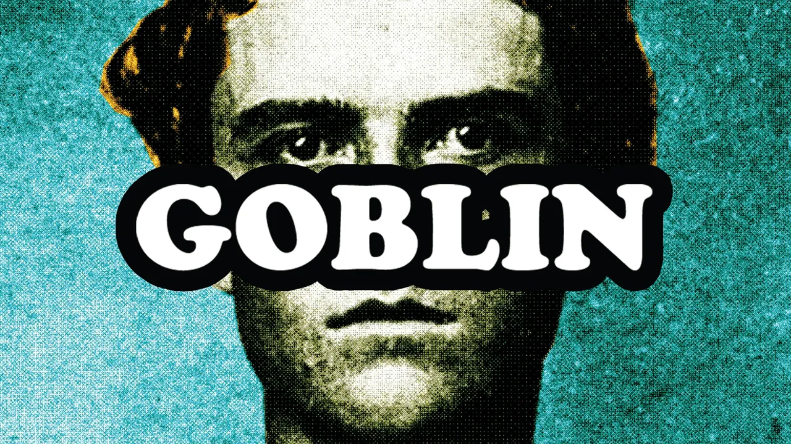

[2011]
Año: 2011
Tipo: Álbum
Goblin es la continuación de las sesiones de terapia iniciadas en Bastard. Es el álbum que lanzó a Tyler al mainstream gracias al éxito de "Yonkers". Un proyecto crudo que explora la fama, el odio y la salud mental.